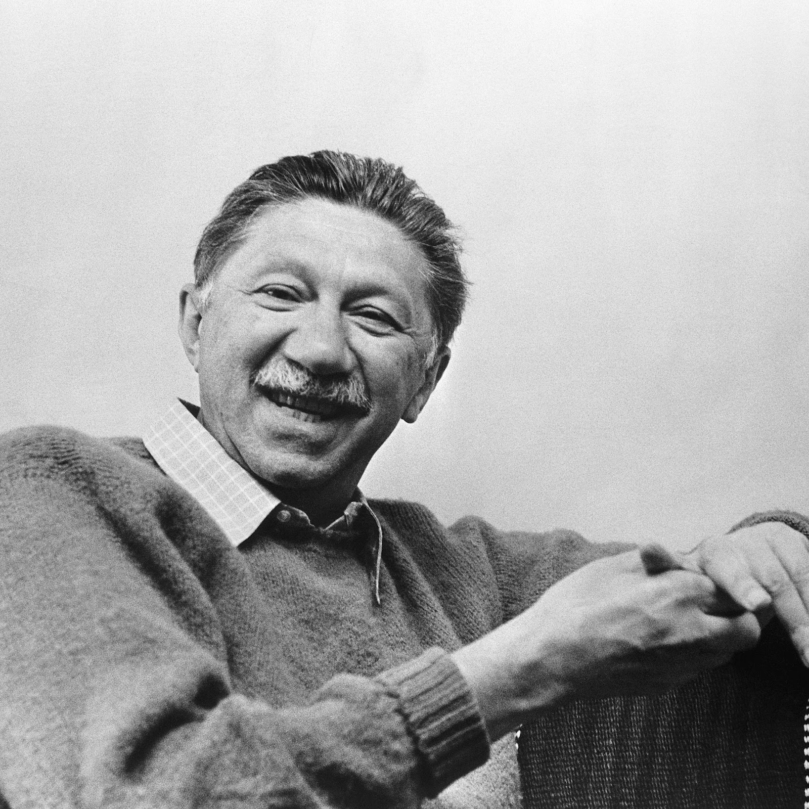
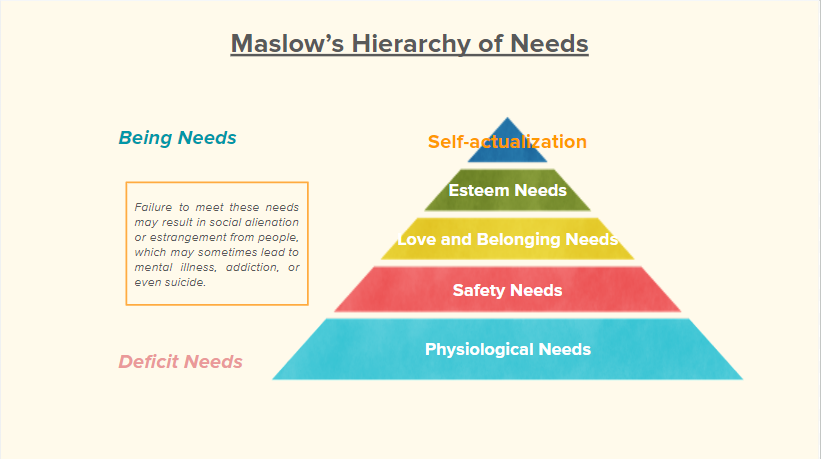

|
Festinger and Social Comparison Theory
This theory became the basis of two types of social comparison:
Festinger’s theory is said to become dangerous when applied to lifestyle and wealth. It drives families to spend beyond their means to keep up with appearances. |
|
Challenges to Social Relationships in Adolescence
|
|
Maslow’s Hierarchy of Needs 
|
In his hierarchy of needs theory, there are four layers of needs an individual has to go through before she/he realizes self-actualization.

|
Challenges to Social Relationships in Adolescence The In-Group and Out-Group Dynamic
|